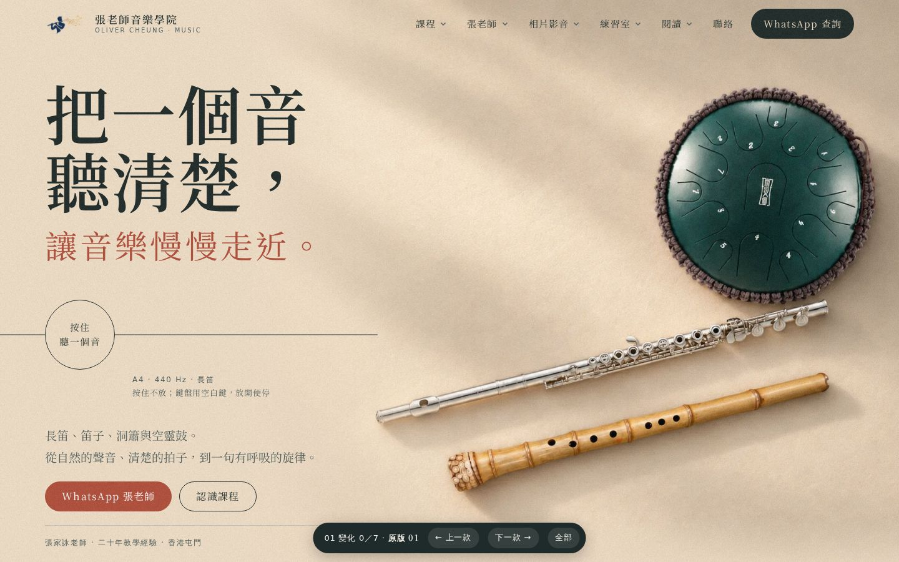
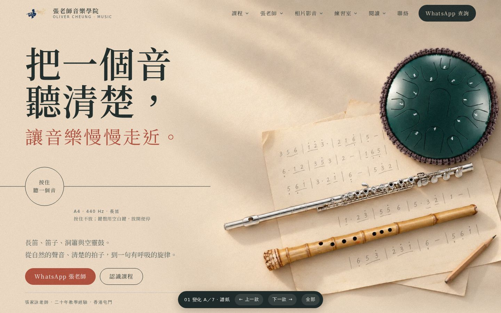
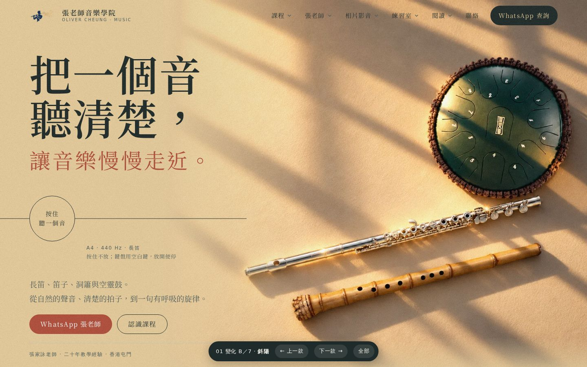
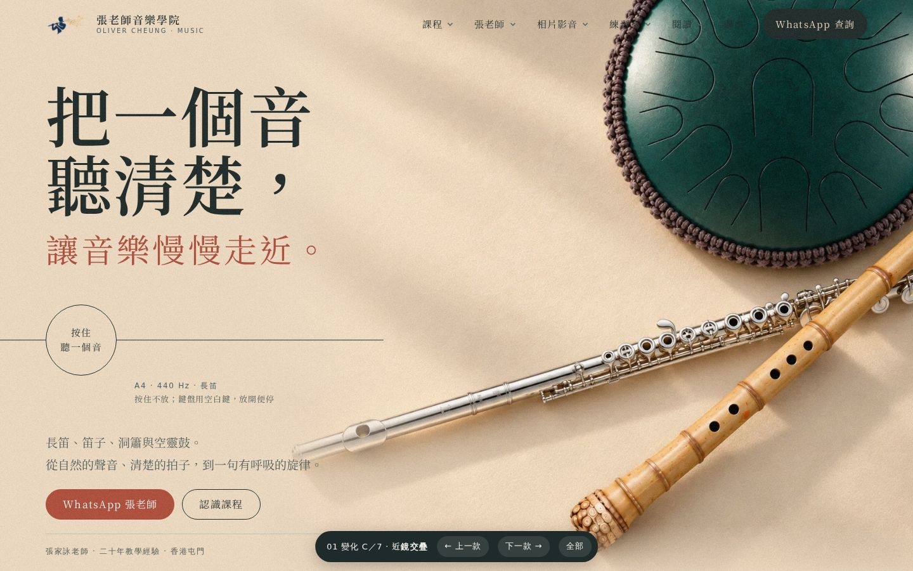
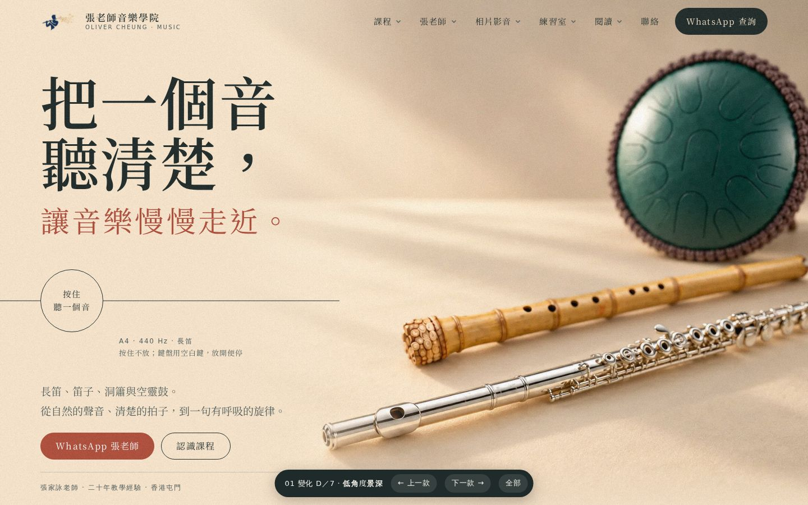
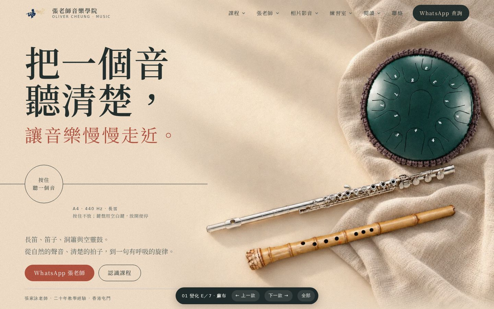
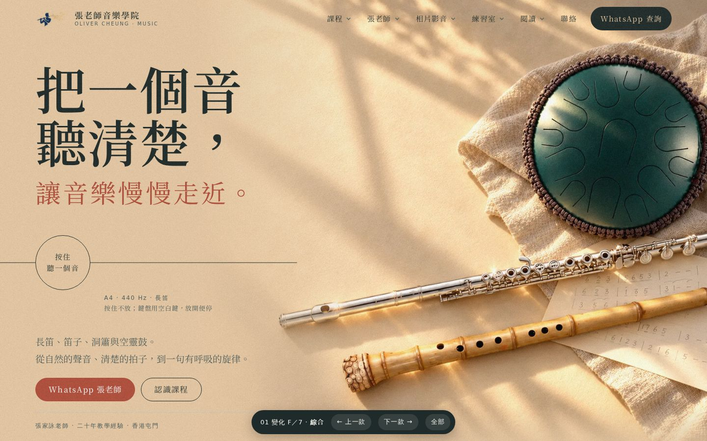

每款只試一個改法，方便看出「差的那一點」是甚麼。每款都是完整首頁，點入去可捲動、按住聽音，底部按鈕可前後切換。

對照：現時的質感版 01。

加手寫簡譜紙和鉛筆：樂器像剛下課放在枱上，多了人的痕跡。

改成下午斜陽，窗影直接橫過鼓面和長笛，明暗對比更強。

鏡頭拉近，鼓出畫邊，南簫壓在長笛尾節上，不再三件平排。

鏡頭放低成斜角，長笛吹口清楚在前，鼓在後面虛化。

鼓下加一塊摺起的亞麻布，紙、布、金屬、竹四種質地對比。

斜陽＋麻布＋簡譜紙＋南簫輕壓長笛。